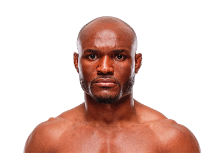

Kamaru Usman, conocido como “The Nigerian Nightmare”, es uno de los peleadores más dominantes que ha tenido la división de peso wélter en la historia de las artes marciales mixtas. Nació el 11 de mayo de 1987 en Auchi, Nigeria. Durante su infancia emigró a los Estados Unidos junto a su familia, donde comenzó a desarrollar su carrera deportiva. Desde muy joven destacó en la lucha libre (wrestling), disciplina en la que logró grandes resultados a nivel universitario y que posteriormente se convirtió en la base principal de su estilo dentro de las artes marciales mixtas.
Gracias a su disciplina, su capacidad física y su mentalidad competitiva, Usman logró convertirse en uno de los atletas más completos del MMA moderno. Su estilo combina presión constante, control en el clinch, dominio en el grappling y una evolución constante en el striking.

Kamaru Usman ganó reconocimiento internacional cuando participó en el reality de peleas The Ultimate Fighter, donde ganó el torneo de peso wélter. Esta victoria le permitió firmar con la Ultimate Fighting Championship (UFC).
En el año 2019 logró el campeonato de peso wélter al derrotar a Tyron Woodley de forma dominante. Durante su reinado defendió el título varias veces contra peleadores de alto nivel como Colby Covington, Gilbert Burns y Jorge Masvidal.
El estilo de pelea de Usman se basa principalmente en su lucha de alto nivel. Utiliza presión constante, derribos estratégicos y control contra la jaula para desgastar a sus oponentes. Además, con el paso de los años desarrolló un striking cada vez más peligroso, logrando incluso victorias por nocaut.
Su capacidad para controlar el ritmo de las peleas, su resistencia física y su inteligencia dentro del octágono lo convirtieron en uno de los campeones más dominantes de la historia de la división wélter.